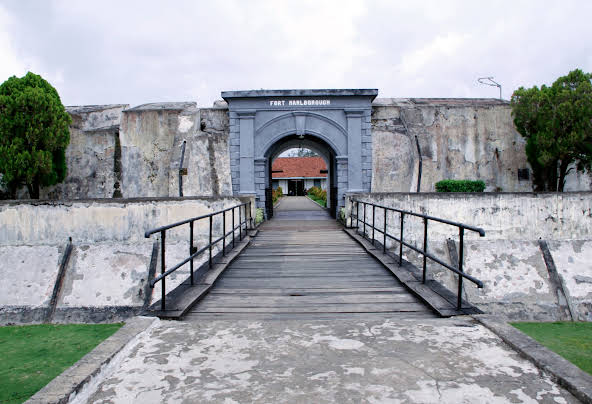
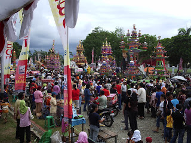

BENGKULU

Bengkulu adalah sebuah provinsi yang berada di pulau Sumatra, Indonesia. Ibu kota provinsi Bengkulu ada di kota Bengkulu. Provinsi ini terletak di bagian Barat Daya Pulau Sumatra, yang berbatasan dengan provinsi Sumatra Barat, Jambi, Sumatra Selatan dan Lampung. Pada tahun 2020, jumlah penduduk provinsi ini sebanyak 2.091.314 jiwa, dengan kepadatan 105 jiwa/km².
SEJARAH

Di wilayah Bengkulu pernah berdiri kerajaan-kerajaan yang berdasarkan etnis seperti Kerajaan Sungai Serut, Kerajaan Selebar, Kerajaan Pat Petulai, Kerajaan Balai Buntar, Kerajaan Sungai Lemau, Kerajaan Sekiris, Kerajaan Gedung Agung, dan Kerajaan Marau Riang. Di bawah Kesultanan Banten, mereka menjadi vazal.
Sebagian wilayah Bengkulu, juga pernah berada di bawah kekuasaan Kerajaan Inderapura semenjak abad ke-17. British East India Company (EIC) sejak 1685 mendirikan pusat perdagangan lada. Bencoolen/Coolen yang berasal dari bahasa Inggris Cut Land yang berarti tanah patah wilayah ini adalah wilayah patahan gempa bumi yang paling aktif di dunia dan kemudian gudang penyimpanan di tempat yang sekarang menjadi Kota Bengkulu. Saat itu, ekspedisi EIC dipimpin oleh Ralph Ord dan William Cowley untuk mencari pengganti pusat perdagangan lada setelah Pelabuhan Banten jatuh ke tangan VOC, dan EIC dilarang berdagang di sana. Traktat dengan Kerajaan Selebar pada tanggal 12 Juli 1685 mengizinkan Inggris untuk mendirikan benteng dan berbagai gedung perdagangan. Benteng York didirikan tahun 1685 di sekitar muara Sungai Serut.
Sejak tahun 1713, dibangun benteng Marlborough (selesai 1719) yang hingga sekarang masih tegak berdiri. Namun, perusahaan ini lama kelamaan menyadari tempat itu tidak menguntungkan karena tidak bisa menghasilkan lada dalam jumlah mencukupi. Sejak dilaksanakannya Perjanjian London pada tahun 1824, Bengkulu diserahkan ke Belanda, dengan imbalan Malaka sekaligus penegasan atas kepemilikan Tumasik/Singapura dan Pulau Belitung).[7] Sejak perjanjian itu Bengkulu menjadi bagian dari Hindia Belanda. Penemuan deposit emas di daerah Rejang Lebong pada paruh kedua abad ke-19 menjadikan tempat itu sebagai pusat penambangan emas hingga abad ke-20. Saat ini, kegiatan penambangan komersial telah dihentikan semenjak habisnya deposit. Pada tahun 1930-an, Bengkulu menjadi tempat pembuangan sejumlah aktivis pendukung kemerdekaan, termasuk Sukarno. Pada masa inilah Sukarno berkenalan dengan Fatmawati yang kelak menjadi istrinya. Setelah kemerdekaan Indonesia, Bengkulu menjadi keresidenan dalam provinsi Sumatra Selatan. Baru sejak tanggal 18 November 1968 ditingkatkan statusnya menjadi provinsi ke-26 (termuda sebelum Timor Timur).
DEMOGRAFI

Provinsi Bengkulu merupakan daerah yang heterogen dari segi suku bangsa. Penduduknya terdiri dari suku-suku asli dan masyarakat pendatang. Suku-suku asli Bengkulu meliputi suku Suku Rejang, Serawai, Minang Mukomuko, Enggano, Kaur, Lembak, Pekal dan Melayu Bengkulu. Di antara suku-suku asli, Rejang dan Serawai adalah dua suku dengan populasi tertinggi, masing-masing dengan persentase 20,6% dan 18,9%. Ada pula masyarakat pendatang meliputi Suku Jawa dengan persentase 22,6% sekaligus sebagai populasi etnis tunggal terbesar di Provinsi Bengkulu, Sunda, suku-suku asal Sumatra Selatan, Batak, Tionghoa, Minangkabau non-Mukomuko, dan lainnya.